Lero 40
Un appartamento tranquillo, a pochi passi dal mare. Il posto giusto per godersi Bibione in famiglia.
Richiedi informazioniSemplicità, comfort e mare
Lero 40 è un appartamento luminoso e accogliente, ideale per una vacanza in famiglia o tra amici. Si trova al quarto e ultimo piano, servito da ascensore, in una zona tranquilla di Bibione, vicino al Lido dei Pini e a circa 200 metri dalla spiaggia.
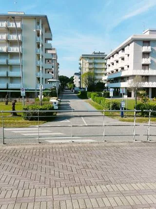
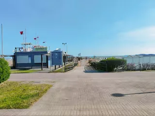
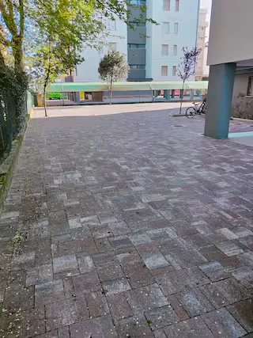
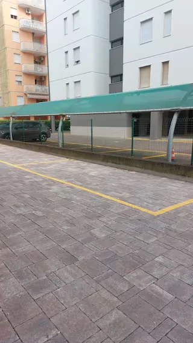
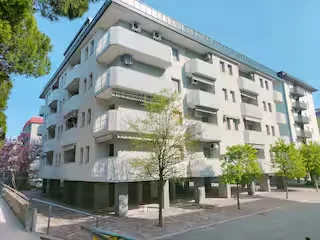
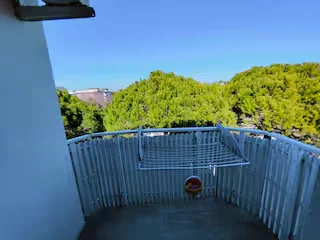
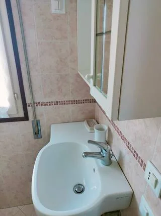
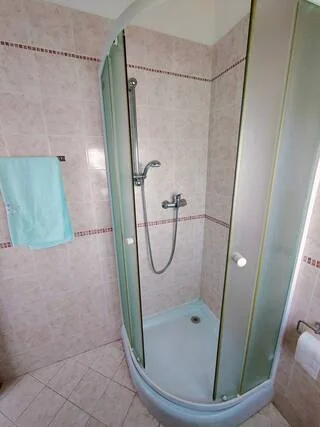
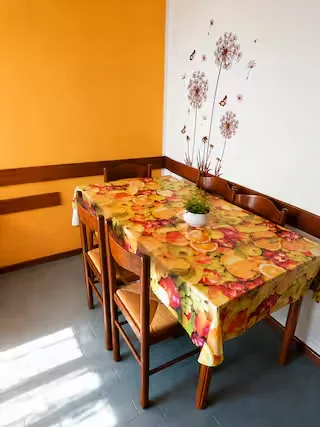
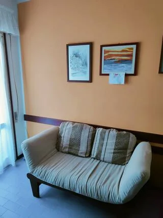
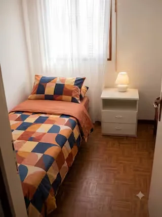
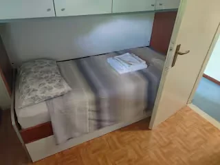
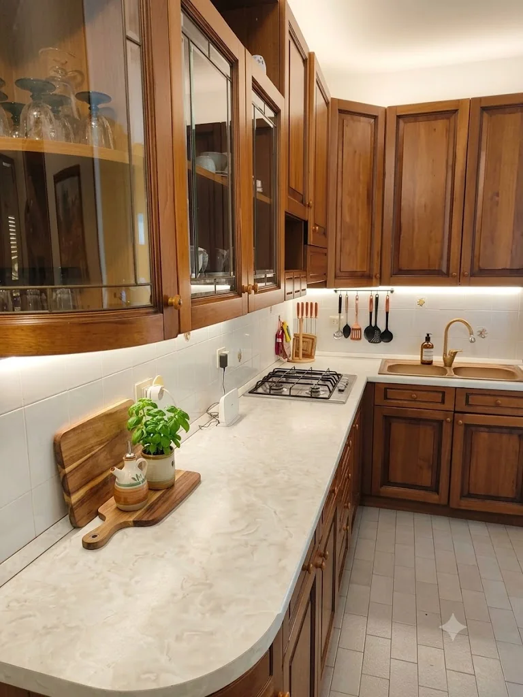
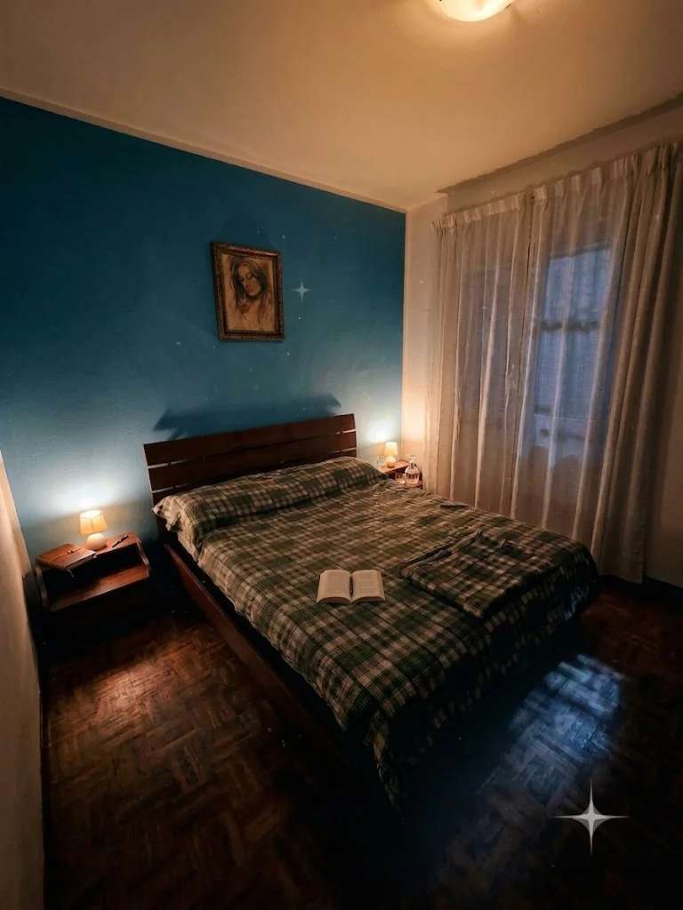
Comfort per la tua vacanza
Per riposare al fresco anche nelle giornate estive.
Piano cottura a gas, frigorifero con freezer e microonde.
Uno spazio all'aperto per godersi un momento di relax.
L'appartamento si trova al quarto e ultimo piano.
Un posto auto gratuito in loco.
Due camere e ambienti accoglienti per vivere comodamente la vacanza in famiglia.
Il mare, a pochi minuti a piedi
L'appartamento si trova in una zona tranquilla, comoda per raggiungere la spiaggia a piedi. Nelle vicinanze trovi il Lido dei Pini, il centro e luoghi ideali per passeggiare e trascorrere il tempo all'aria aperta.
Circa 200 metri dal mare
Indirizzo: Via Regolo 71, Bibione (VE)
Apri la mappaOrganizza la tua vacanza a Lero 40
Scrivici per informazioni, disponibilità e dettagli sul soggiorno. Ti risponderemo direttamente.
Codice identificativo: IT027034C2GH8SMMQM